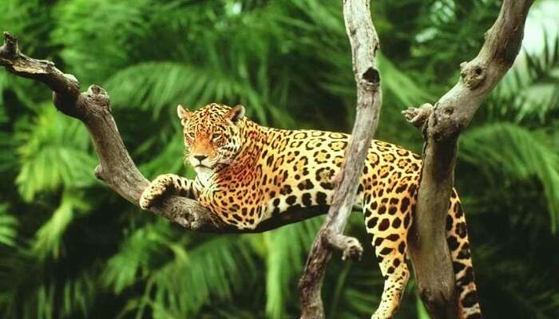
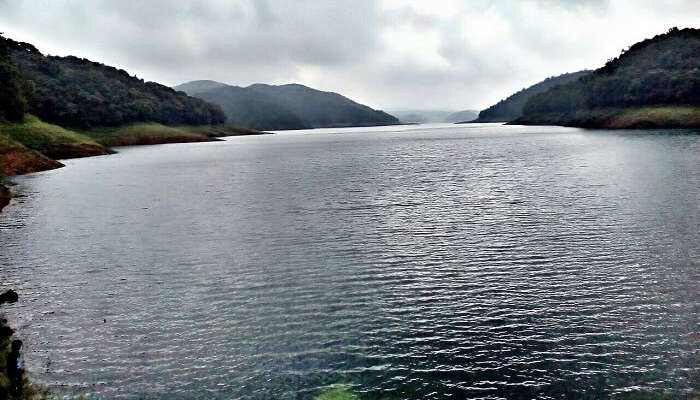
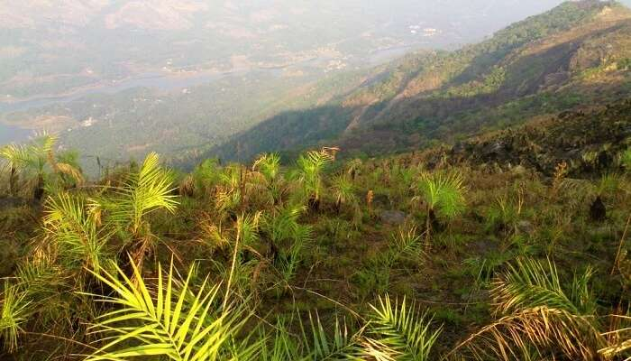
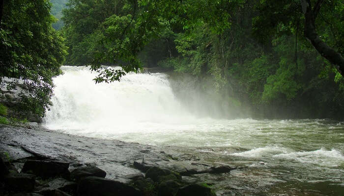
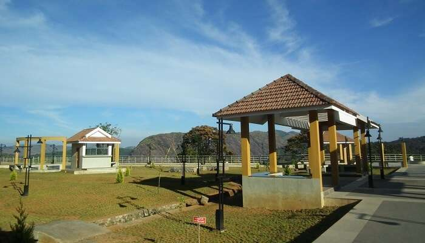
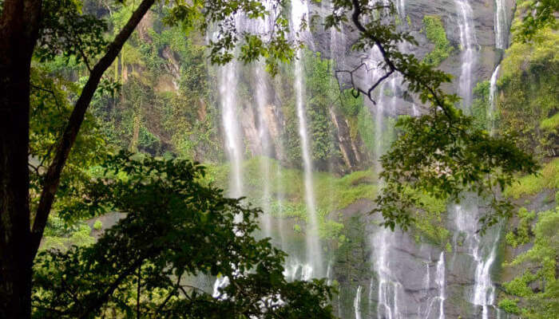

1. Idukki Wildlife Sanctuary

2. Idukki Arch Dam

3. Calvary Mount

4. Painavu

5. Ilaveezha Poonchira

6. Thommankuthu Waterfalls

7. Hill View Park

8.Ramakkalmedu

9.Keezharkuthu Falls

Idukki is the second largest district in area but has the lowest population density. Idukki has a vast forest reserve area; more than a half of the district is covered by forests. The urban areas are densely populated whereas villages are sparsely populated. Idukki is also known as the spice garden of Kerala.
The name Idukki was derived from the word 'Idukku' which means a gorge. As per G.O. ... At present, the District consists of 5 Taluks viz., Devikulam, Udumbanchola, Thodupuzha, Peerumade and Idukki.
A proud home of South India’s highest peak, Anamudi that stands at a height of 2,695 meters, Idukki is one of the most stunning hill stations in Kerala.Housing 13 other peaks with a height of over 2000 meters, it attracts tourist from across the globe for its wildlife sanctuaries, hill stations, spice plantation centers, and mountain treks. And to experience the best of all these natural marvels, include these mesmerizing Idukki tourist places that will add the much needed charm to your holiday in Kerala.